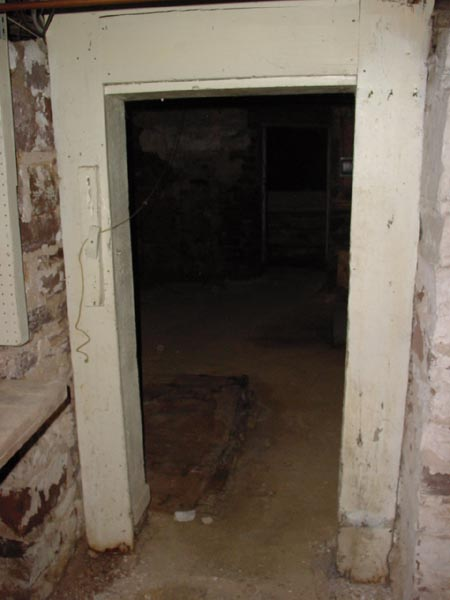

|  |
|
This is the grand archway to the lesser hall. Not the fine crafstmanship that might indicate that at one time this arch may have been worthy of a door. Note how the central foundation still has gaps between the beams so that all manner of insects and air may circulate between rooms. A breathless design. [ Look left at the Workbench | Enter the lesser hall | Back to by the stairs | Look to the Right ] |